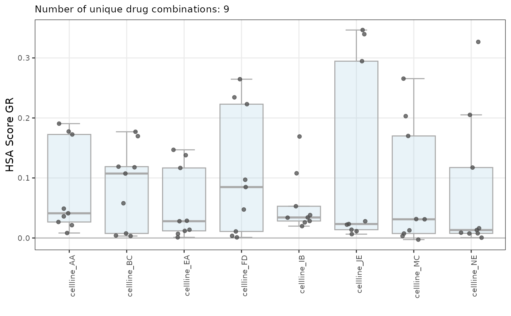
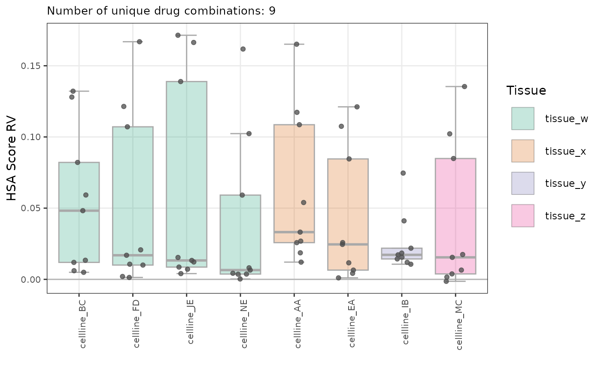
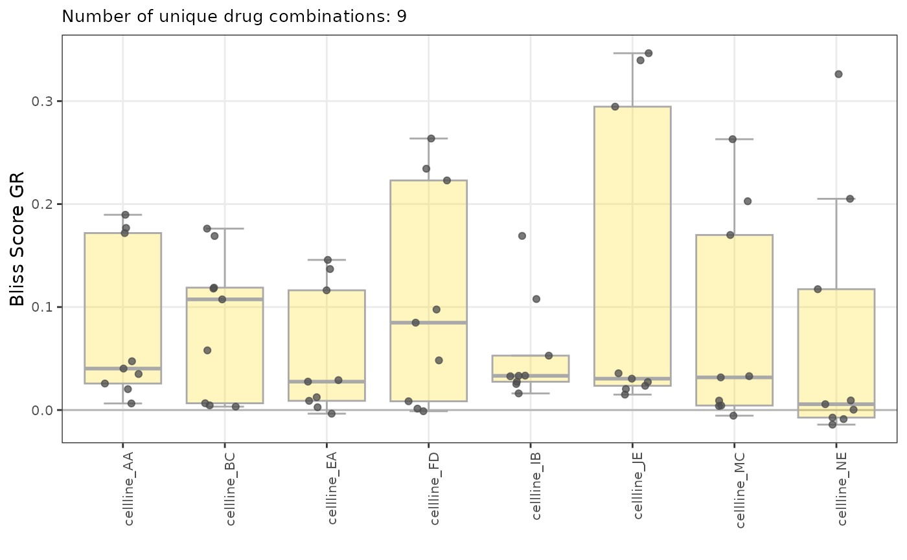
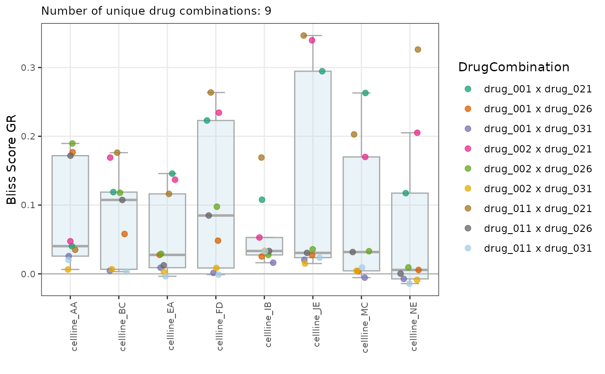
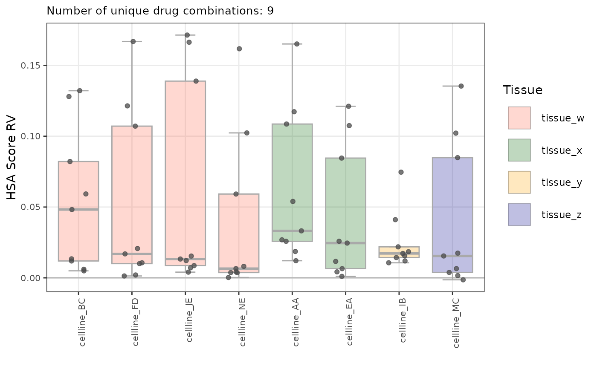

Plot box plots for metric for combo data grouped by cell line names
Source:R/plot-boxplot_metric.R
plot_boxplot_metric_combo_by_CLs.RdPlot box plots for metric for combo data grouped by cell line names
Usage
plot_boxplot_metric_combo_by_CLs(
dt_scores,
normalization_type = "GR",
metric = "hsa_score",
fit_source = "gDR",
grouped_flag = FALSE,
colored_pts_flag = FALSE,
colors_vec = NULL
)Arguments
- dt_scores
data.tablerepresenting data from thescoresassay, outputted bygDRutils::convert_se_assay_to_dt(se, "scores")and comboSummarizedExperiment- normalization_type
string with normalization types to be selected one of: "GR" ("GRvalue") or "RV" ("RelativeViability")
- metric
string name of the combo metric; one of: "hsa_score"("Bliss Excess GR" or "Bliss Excess RV" - respectively depending on
normalization_type) or "bliss_score" ("Bliss Score GR" or "Bliss Score RV")- fit_source
string source name for metrics
- grouped_flag
a logical flag whether the boxplots should be grouped and colored by
Tissueforgroup_varset as"CellLineName"anddrug_moa- for"DrugName"- colored_pts_flag
a logical flag whether the points should be colored by grouped variable - for
group_varequal"CellLineName"points will be colored by"DrugName"and similarly vice versa- colors_vec
character vector with colors (name or hex value) to color boxplots; for
grouped_flagset asFALSEonly first from vector will be used
Author
Janina Smoła janina.smola@contractors.roche.com
Examples
mae <- gDRutils::get_synthetic_data("combo_matrix")
se <- mae[[gDRutils::get_supported_experiments("combo")]]
dt_scores <- gDRutils::convert_se_assay_to_dt(se = se,
assay_name = "scores")
plot_boxplot_metric_combo_by_CLs(dt_scores)

plot_boxplot_metric_combo_by_CLs(dt_scores,
normalization_type = "RV",
grouped_flag = TRUE)

plot_boxplot_metric_combo_by_CLs(dt_scores,
metric = "bliss_score",
colors_vec = "gold")

plot_boxplot_metric_combo_by_CLs(
dt_scores,
metric = "bliss_score",
colored_pts_flag = TRUE)

plot_boxplot_metric_combo_by_CLs(
dt_scores,
metric = "hsa_score",
normalization_type = "RV",
grouped_flag = TRUE,
colors_vec = c("tomato", "darkgreen", "orange", "darkblue"))
